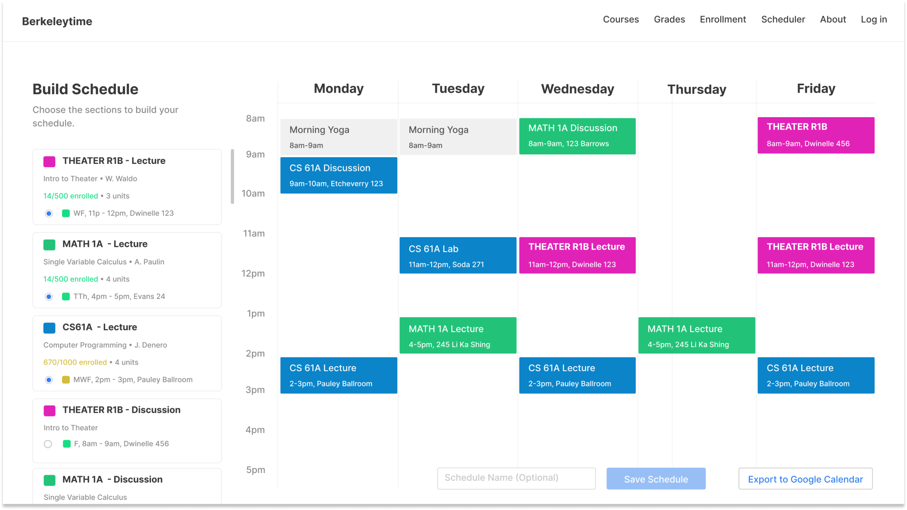

Berkeleytime Scheduler
Fall 2020 I’m leading a team of 3 designers in Berkeleytime. We are a team of students at UC Berkeley building and maintaining a course exploration website used by 26k+ UC Berkeley students.
My main project this semester is to design a schedule building feature for the website. This is currently a work in progress, and I’m currently working with another designer and two backend engineers on this project.
THE PROBLEM
When exploring courses to take, a common behavior for students is to switch tabs between Berkeleytime and Google Calendar to ensure there are no schedule conflicts in their interested courses. This is an annoying and inefficient process that leaves room for human error and could potentially lead to critical enrollment mishaps.
THE SOLUTION
This feature will allow students to add classes to their shopping cart when they are browsing courses on Berkeleytime.com, view and edit them on a calendar within the site itself, and export a finalized schedule to Google Calendar.

Hold on tight!
This project is a work in process. More content to come in the near future.